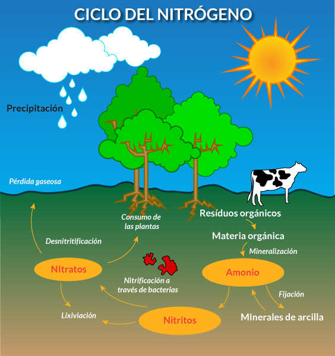

Ciclo de nitrógeno
La reserva fundamental es la atmósfera, que está compuesta por un 78% de nitrógeno. No obstante, la mayoría de los seres vivos no lo puede utilizar en forma directa, con lo cual dependen de los minerales presentes en el suelo para su utilización. En los organismos productores el nitrógeno ingresa en forma de nitratos, y en los consumidores en forma de grupos amino. Existen algunas bacterias especiales que pueden utilizar directamente el nitrógeno atmosférico. Esas bacterias juegan un papel muy importante en el ciclo al hacer la fijación del nitrógeno. De esta forma convierten el nitrógeno en otras formas químicas como amonio y nitratos, para que puedan ser aprovechadas por las plantas. Está compuesto por las siguientes etapas:
Fijación: Se produce cuando el nitrógeno atmosférico (N2) es transformado en amoníaco (NH3) por bacterias presentes en los suelos y en las aguas. Rhizobium es un género de bacterias que viven en simbiosis dentro de los nódulos que hay en las raíces de plantas leguminosas. En ambientes acuáticos, las cianobacterias son importantes fijadoras de nitrógeno.
Amonificación: Es la transformación de compuestos nitrogenados orgánicos en amoníaco. En los animales, el metabolismo de los compuestos nitrogenados da lugar a la formación de amoníaco, siendo eliminado por la orina como urea (humanos y otros mamíferos), ácido úrico (aves e insectos) o directamente en amoníaco (algunos peces y organismos acuáticos). Estas sustancias son transformadas en amoníaco o en amonio por los descomponedores presentes en los suelos y aguas. Ese amoníaco queda a disposición de otro tipo de bacterias en las siguientes etapas.
Nitrificación: es la transformación del amoníaco o amonio (NH4+) en nitritos (NO2–) por un grupo de bacterias del género Nitrosomas para luego esos nitritos convertirse en nitratos (NO3–) mediante otras bacterias del género Nitrobacter.
Asimilación: Las plantas toman el amonio (NH4+) y el nitrato (NO3–) por las raíces para poder utilizarlos en su metabolismo. Usan esos átomos de nitrógeno para la síntesis de clorofila, de proteínas y de ácidos nucleicos (ADN y ARN). Los consumidores obtienen el nitrógeno al alimentarse de plantas y de otros animales.
Desnitrificación: Proceso llevado a cabo por bacterias desnitrificantes que necesitan utilizar el oxígeno para su respiración en suelos poco aireados y mal drenados. Para ello, degradan los nitratos y liberan el nitrógeno no utilizado a la atmósfera.

ATRAS